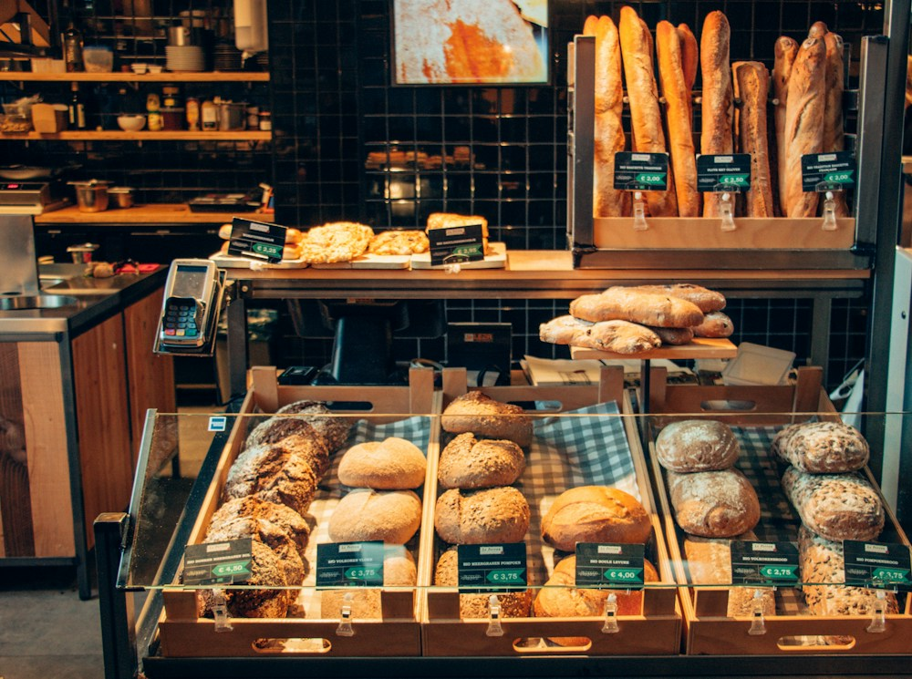

Hecho para
celebrar.
Pasteles, pequeños antojos y mucho cariño. El detalle dulce que convierte un día cualquiera en uno especial.
Explorar nuestros productosNuestra historia
Hecho en nuestro obradorCon cuidado en cada detalle
Para cada ocasiónUn detalle que se recuerda
Recoge en nuestra tiendaTe esperamos con algo dulce
¿Qué se te antoja hoy?
Hay una pequeña felicidad para cada gusto.

Amor al primer bocado.
Descubre los favoritos de nuestro mostrador.

Lo bonito está
en los detalles.
En Dulce Rincón creemos que los mejores recuerdos casi siempre tienen algo dulce. Por eso cuidamos cada receta, cada decoración y cada caja que sale de nuestro obrador.
Somos una pastelería de pequeños detalles y grandes celebraciones. Nos gusta hacer las cosas con calma, con buenas manos y con mucho corazón.
Con cariño, Dulce Rincón
Nos vemos
en el lado dulce.
Siempre hay un buen motivo para visitarnos.
Nuestra pastelería
Av. de las Rosas 124, Col. Centro
Ciudad de México, C. P. 06000
Te esperamos
Todos los días: 10:00 a 20:00
Recogida de pedidos en este horario